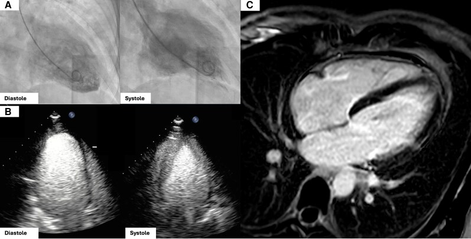
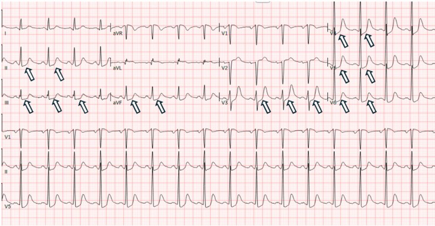
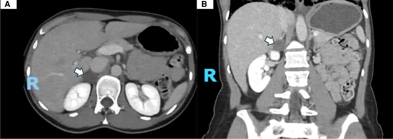

167 — Biến chứng tim mạch của u tủy thượng thận: bệnh cơ tim do catecholamine, takotsubo & khủng hoảng tăng huyết áp / Catecholamine-induced cardiomyopathy and pheochromocytoma crisis
Tags: pattern:cardiomyopathy pattern:takotsubo pattern:rong-loan-van-dong-vung vung:tim vung:thuong-than protocol:MRI-tim protocol:ECMO incidentaloma:u-thuong-than
Mức chắc chắn (certainty): tổng hợp y văn (literature synthesis) — ca nguyên văn reverse takotsubo (PMC13090540), nghiên cứu yếu tố dự báo (PMC8959126), review khủng hoảng đa cơ quan (PMC11943199), ca takotsubo tái phát (PMC13166324) và guideline Nhật 2025 (PMC12819074); số liệu lấy trực tiếp từ bài gốc.
Câu chốt: Ở bệnh nhân đau ngực + ST chênh + troponin tăng nhưng mạch vành sạch, đừng dừng ở "viêm cơ tim" hay "takotsubo vô căn" — hãy hỏi huyết áp có dao động từng cơn không. Một khối thượng thận nhỏ có thể là nguyên nhân của sốc tim, phù phổi, rối loạn nhịp và đột tử; và điều trị sai (ức chế miễn dịch, chẹn beta đơn thuần) có thể kích hoạt cơn kịch phát.
1. Tổng quan — catecholamine làm hỏng cơ tim như thế nào
- Bệnh học (pathology): catecholamine tăng vọt kích thích thụ thể beta-1 trên tế bào cơ tim → tăng cAMP/PKA → quá tải canxi nội bào, giảm co bóp và tăng tiêu thụ oxy. Đồng thời kích thích alpha-1 gây co mạch vành, rối loạn vi tuần hoàn, tăng gốc tự do → hoại tử dải co thắt (contraction band necrosis), thâm nhiễm bạch cầu và xơ hóa. Mô học giống viêm cơ tim nhưng không do nhiễm trùng.
- TẠI SAO hồi phục: tổn thương chủ yếu là choáng cơ tim (myocardial stunning) do catecholamine, không có tắc mạch vành cố định; khi nguồn catecholamine được cắt hoặc chặn, chức năng tim thường hồi phục trong ~21 ngày (có ca sớm hơn).
- TẠI SAO troponin thường không tương xứng: tổn thương lan tỏa từng đám, không có ổ nhồi máu lớn; troponin tăng nhưng không tương xứng với mức rối loạn vận động là một gợi ý (không phải quy luật tuyệt đối).
- TẠI SAO ECG giống nhồi máu: thiếu máu dưới nội tâm mạc do co mạch/vi mạch → ST chênh xuống nhiều chuyển đạo, QT dài, loạn nhịp; có thể có ST chênh lên thoáng qua.
- Hình thái takotsubo: thể đỉnh (apical ballooning) kinh điển; thể đảo ngược (reverse) với giảm vận động vùng nền và đỉnh tăng động — chiếm ~2% takotsubo nói chung nhưng tới 28% các ca liên quan pheo, và tiên lượng xấu hơn thể kinh điển.
- Dịch tễ & tiên lượng (số liệu định lượng): bệnh cơ tim do catecholamine gặp ở 8–11% bệnh nhân PPGL; biến chứng xảy ra tới 68%, trong đó suy tim 53%, sốc tim 37,7%. Khủng hoảng đa cơ quan (pheochromocytoma multisystem crisis, PMC) có tử vong 13,8%; hỗ trợ tuần hoàn cơ học (VA-ECMO) kéo dài trung vị 4 ngày (1–7), sống sót trong viện 93,5% (có thể bị thiên lệch công bố). Trong PPGL, > 2/3 tử vong do biến chứng tim mạch; 20% có rối loạn nhịp; < 10% huyết áp bình thường khi khởi phát.
- Di chứng: 59% bệnh nhân PPGL có sẹo cơ tim không do thiếu máu trên MRI tim; 50–60% ca mổ tử thi có viêm cơ tim khu trú. Chức năng tim hồi phục ở 69,4% ca bệnh cơ tim do pheo (so với 40,8% bệnh cơ tim nguyên phát khác), nhưng tái phát 20% nếu không điều trị u.
Yếu tố dự báo bệnh cơ tim do catecholamine (hồi cứu 202 ca, đa biến):
- Nhịp tim nghỉ tối đa ≥ 115 lần/phút — OR 10,05 (95% CI 3,71–27,20).
- Huyết áp tâm thu tối đa ≥ 180 mmHg — OR 7,17 (2,22–23,23).
- Glucose máu ≥ 8,0 mmol/L — OR 6,52 (2,25–18,86).
- ≥ 3 triệu chứng/dấu hiệu — OR 6,05 (1,86–19,64).
- Tuổi khởi phát ≤ 40 — OR 3,74 (1,37–10,20).
- Thể takotsubo (trong nhóm bệnh cơ tim) gặp nhiều hơn ở nữ (OR 5,06), đau ngực (OR 5,84) và u ngoài thượng thận (OR 8,64).
2. Mẫu hình + chẩn đoán phân biệt theo bệnh cảnh (gamut)
- A — Đau ngực + ST chênh + men tim tăng, mạch vành sạch: nghĩ takotsubo do pheo (đỉnh/đảo ngược/toàn bộ), viêm cơ tim, co thắt mạch vành, nhồi máu đã tái thông. Đây là cửa vào hay bị bỏ sót nhất.
- B — Suy tim cấp/phù phổi cấp: bệnh cơ tim do catecholamine, hẹp van/ bệnh van cấp, quá tải dịch; ở pheo, phù phổi có thể xuất hiện sau chẹn beta đơn thuần hoặc glucocorticoid.
- C — Rối loạn nhịp: rung nhĩ, nhịp nhanh trên thất, QT dài, nhịp nhanh thất; 20% PPGL có loạn nhịp.
- D — Sốc tim/đa cơ quan: hạ huyết áp, lactate cao, thiểu niệu, suy gan/thận; 37,7% ca takotsubo do pheo có sốc tim.
- E — Khủng hoảng tăng huyết áp có tổn thương cơ quan đích: đột quỵ, nhồi máu cơ tim, bóc tách động mạch chủ, phù phổi; huyết áp thường > 180/120 mmHg.
Kích hoạt cơn (trigger) — hỏi kỹ trước khi làm thủ thuật:
- Sinh hoạt: cúi người, gắng sức, ăn quá no, rượu, phô mai lâu năm/thực phẩm nhiều tyramine, hút thuốc, căng thẳng, thai kỳ.
- Thủ thuật: sờ nắn bụng, thụt tháo, sinh thiết u, tiêm thuốc cản quang.
- Thuốc: metoclopramide, glucagon, chẹn beta đơn thuần, chống trầm cảm ba vòng, SNRI, MAOI, dexamethasone liều cao.
- Điều trị: hóa trị CVD, ¹³¹I-MIBG, xạ ngoài, nút mạch (TAE), đốt RF.
Chẩn đoán phân biệt cốt lõi: hội chứng vành cấp (ACS), viêm cơ tim, thuyên tắc phổi, sốc nhiễm khuẩn, bóc tách động mạch chủ, co thắt mạch vành, bệnh cơ tim stress không do pheo.
3. Bảng so sánh phân biệt (ma trận đối chiếu)
| Thực thể (entity) | Hình ảnh/lâm sàng điển hình | Chốt vào (rule-in) | Chốt loại (rule-out) | Xác nhận |
|---|---|---|---|---|
| Bệnh cơ tim do catecholamine / takotsubo do pheo | Đau ngực, khó thở, ST chênh, troponin tăng nhẹ; echo giảm vận động vùng không theo lãnh thổ mạch vành; phù phổi | Mạch vành sạch + rối loạn vận động vùng + metanephrine tăng + có khối thượng thận | Tắc mạch vành thực sự; men tim tăng rất cao kèm ST chênh lên điển hình | Echo → CMR (T2 edema, LGE từng đám), metanephrine, CT/MRI thượng thận |
| Hội chứng vành cấp (ACS) | ST chênh lên/xuống theo vùng, troponin tăng, đau ngực điển hình | Tắc mạch vành trên chụp mạch + vùng cơ tim khớp lãnh thổ | Mạch vành sạch + rối loạn vận động toàn bộ/đảo ngược → nghĩ takotsubo/pheo | Chụp mạch vành, siêu âm tim |
| Viêm cơ tim | Sốt/tiền sử nhiễm virus, ST-T thay đổi, men tim tăng, giảm chức năng lan tỏa | CMR: phù cơ tim lan tỏa + LGE dưới thượng tâm mạc/giữa thành | Không sốt, có cơn THA, có u thượng thận → nghĩ pheo | CMR, troponin, ± sinh thiết (hiếm) |
| Thuyên tắc phổi | Khó thở, đau ngực màng phổi, D-dimer tăng, thất phải giãn | CTPA có huyết khối + thất phải giãn | CTPA âm + men tim tăng đơn độc → không loại trừ pheo | CTPA, siêu âm tim |
| Sốc nhiễm khuẩn | Sốt, ổ nhiễm, lactate cao, giãn mạch | Cấy dương + ổ nhiễm + đáp ứng vận mạch | Không ổ nhiễm, huyết áp dao động từng cơn, có u thượng thận | Cấy, PCT, siêu âm |
| Bóc tách động mạch chủ | Đau sau lưng dữ dội, chênh huyết áp hai tay, mất mạch | Flap/lật nội mạc trên CTA | CTA âm + không chênh huyết áp | CTA ngực–bụng |
| Co thắt mạch vành | Đau ngực khi nghỉ, ST chênh thoáng qua, mạch vành sạch | Co thắt khi test acetylcholine/ergonovine | Co thắt không tái lập + có u thượng thận → nghĩ pheo | Chụp mạch + test co thắt |

(A) Ventriculography thì tâm trương–tâm thu: giảm vận động vùng nền, đỉnh tăng động (reverse takotsubo). (B) Siêu âm tim M-mode xác nhận. (C) MRI tim 4 buồng: rối loạn vận động vùng, không có LGE điển hình theo lãnh thổ mạch vành. Nguồn: Cedeno-Serna J et al., JCEM Case Reports 2026 (PMC13090540), Fig. 2, CC BY 4.0.4. Protocol chẩn đoán & xử trí
4.1. Tiếp cận cấp cứu (6 bước)
- ECG + troponin + siêu âm tim tại giường trong 10–15 phút; đo huyết áp hai tay, hỏi cơn THA từng cơn, thuốc đã dùng.
- Nếu ST chênh lên hoặc nghi ACS: chụp mạch vành theo đường ACS. Mạch vành sạch + rối loạn vận động vùng → chuyển hướng sang takotsubo/pheo.
- Siêu âm tim: đánh giá EF, rối loạn vận động vùng, hẹp van, áp lực động mạch phổi, tràn dịch màng tim.
- MRI tim khi chẩn đoán chưa rõ: cine + T2 mapping/STIR (phù) + LGE (sẹo/xơ) + tưới máu; không chờ MRI nếu bệnh nhân sốc.
- Tầm soát pheo: metanephrine tự do huyết tương/niệu trước khi sinh thiết; sau đó CT/MRI thượng thận–bụng. Không chọc hút u thượng thận chưa loại pheo.
- Tìm và loại bỏ yếu tố kích hoạt: ngừng metoclopramide/glucocorticoid, không dùng chẹn beta đơn thuần, tránh sờ nắn u.
4.2. Điều trị
- Chẹn alpha là nền tảng: phentolamine truyền 1–6 µg/kg/phút hoặc bolus 5–15 mg; hoặc phenoxybenzamine/doxazosin đường uống khi huyết áp cho phép. Mục tiêu: kiểm soát cơn THA mà vẫn giữ tưới máu.
- Chẹn beta chỉ sau khi đã chẹn alpha, nếu nhịp nhanh dai dẳng; không dùng trong cơn cấp chưa chẹn alpha.
- Suy tim/sốc tim: hạn chế inotrope (có thể làm nặng nghẽn đường ra và tăng tiêu thụ oxy); VA-ECMO/Impella khi sốc kháng trị, làm cầu nối tới hồi phục hoặc tới mổ. Số liệu: VA-ECMO trung vị 4 ngày, sống sót viện 93,5%, hồi phục EF sau cai máy.
- Không mổ cấp cứu thường quy: ưu tiên ổn định + chẹn alpha + hỗ trợ cơ học; mổ khi tim hồi phục. Mổ cấp cứu chỉ khi khủng hoảng không thể ổn định (ca ECMELLA + cắt u sớm đã được báo cáo).
- Sau mổ: theo dõi tụt huyết áp do giãn mạch và hạ đường huyết; đo glucose 48 giờ; hồi phục chức năng tim có thể mất vài tuần.
flowchart TD
A[Dau nguc / kho tho / soc] --> B[ECG + troponin + sieu am tim]
B --> C{ST chenh len hoac nghi ACS?}
C -->|Co| D[Chup mach vanh]
D --> E{Mach vanh tac?}
E -->|Co| F[Xu tri ACS]
E -->|Khong| G{Co roi loan van dong vung?}
C -->|Khong| G
G -->|Co| H[CMR tim: phu / LGE]
H --> I{Metanephrine tang + khoi thuong than?}
I -->|Co| J[Pheo gay benh co tim / takotsubo]
I -->|Khong| K[Takotsubo vo can / viem co tim / co that mach vanh]
J --> L[Chan alpha truoc; chan beta sau]
L --> M{Soc tim / phu phoi nang?}
M -->|Co| N[VA-ECMO / Impella - cau noi]
M -->|Khong| O[On dinh roi mo sau khi tim hoi phuc]
N --> O
4.3. Theo dõi sau biến cố
- Siêu âm tim lặp sau 1–2 tuần, 1 tháng, 3–6 tháng đến khi EF bình thường; nhiều ca hồi phục trong 21 ngày.
- MRI tim nếu nghi sẹo/xơ hoặc chức năng không hồi phục; 59% PPGL có sẹo không do thiếu máu.
- Điều trị u là biện pháp phòng tái phát chính; nếu chưa mổ được, chẹn alpha duy trì và theo dõi.
- Tầm soát gia đình khi có đột biến (RET/VHL/SDHx) — bài 199.
5. Biến thể bình thường và cạm bẫy
- Cạm bẫy chết người số 1: gọi là "viêm cơ tim" rồi cho corticosteroid. Glucocorticoid liều cao có thể kích hoạt khủng hoảng pheo; trước khi dùng steroid cho "viêm cơ tim không rõ nguyên nhân", phải loại pheo ở bệnh nhân có cơn THA/tim đập nhanh.
- Cạm bẫy số 2: chẹn beta đơn thuần để trị nhịp nhanh → mất giãn mạch beta-2, tăng co mạch alpha → phù phổi, cơn THA.
- Troponin bình thường không loại trừ, nhất là khi đến muộn; đánh giá bằng siêu âm + MRI.
- Reverse takotsubo không "nhẹ hơn": thể đảo ngược liên quan tiên lượng xấu hơn và hay gặp ở người trẻ/nữ.
- Mạch vành sạch không có nghĩa "không có bệnh mạch vành": có thể co thắt, bệnh vi mạch, hoặc takotsubo.
- Không bỏ sót u bàng quang: PGL bàng quang gây cơn THA khi đi tiểu; bệnh nhân có thể được chẩn đoán nhầm là bệnh tim do stress.
- Sau cắt u, huyết áp có thể tụt và glucose có thể hạ — không phải "biến chứng lạ", mà là hệ quả sinh lý của việc mất nguồn catecholamine.
- Thai kỳ: cơn THA + suy tim ở thai phụ có thể là pheo; MRI là chìa khóa, tránh CT bụng không cần thiết (bài 169).
6. Tự lượng giá — Blind Quiz
Ca 1 (phần 1) — Nữ 46 tuổi, đau ngực từng cơn, khó thở, huyết áp dao động, ECG dưới đây. Bạn đọc gì trước khi biết troponin?

- Gợi ý lâm sàng: không đau ngực điển hình, không tiền sử bệnh mạch vành.
- Câu hỏi: Dấu hiệu ECG chính? 3 chẩn đoán phân biệt? Xét nghiệm nào có giá trị nhất tiếp theo?
Bấm để hiện đáp án (findings + chẩn đoán)
- Dấu hiệu: ST chênh xuống ở nhiều chuyển đạo (II, III, aVF, V3–V6), QT dài, không có ST chênh lên theo một vùng mạch vành.
- Phân biệt: ACS (NSTEMI), takotsubo/pheo, viêm cơ tim, co thắt mạch vành.
- Tiếp theo: troponin + siêu âm tim + chụp mạch vành nếu nghi ACS; nếu mạch vành sạch → MRI tim và tầm soát pheo.
- Nguồn: Cedeno-Serna J et al., JCEM Case Reports 2026, Fig. 1, PMC13090540, CC BY 4.0.
Ca 2 (phần 2 — cùng bệnh nhân) — Chụp mạch vành sạch; ventriculography và MRI tim như hình; CT bụng phát hiện khối 3 cm thượng thận phải. Chẩn đoán và bước tiếp theo?

- Câu hỏi: Vì sao đây không phải ACS? Khối thượng thận gợi ý gì? Có nên sinh thiết ngay không?
Bấm để hiện đáp án (findings + chẩn đoán)
- Dấu hiệu: ventriculography giảm vận động vùng nền, đỉnh tăng động = reverse takotsubo; MRI tim không có LGE theo lãnh thổ mạch vành; CT có khối 3 cm thượng thận phải, metanephrine niệu > 8 lần giới hạn trên.
- Chẩn đoán: bệnh cơ tim do catecholamine / reverse takotsubo do pheochromocytoma.
- Không sinh thiết: chọc u thượng thận chưa loại pheo có thể gây cơn THA/khủng hoảng. Bước tiếp: chẹn alpha, theo dõi tim, mổ sau khi tim hồi phục.
- Diễn tiến: EF hồi phục, metanephrine bình thường sau 1 tuần; u nhỏ dần sau xuất huyết trong u — nhưng vẫn cần theo dõi vì u còn đó.
- Nguồn: Cedeno-Serna J et al., JCEM Case Reports 2026, Fig. 2–3, PMC13090540, CC BY 4.0.
Ca 3 — Nữ 29 tuổi được chẩn đoán "viêm cơ tim nặng", EF 25%, sau đó huyết áp dao động 90–150/50–90 mmHg. Bạn nghĩ thêm gì?
Bấm để hiện đáp án
- Nghĩ pheo: bệnh cơ tim không giải thích được + huyết áp dao động từng cơn + đáp ứng kém với điều trị viêm cơ tim thông thường. Ca tương tự trong y văn được chẩn đoán CICMP do pheo sau 3 năm, với EF 25% và phù phổi cấp.
- Việc cần làm: metanephrine, CT/MRI thượng thận, không sinh thiết trước khi loại pheo, chẹn alpha trước mọi can thiệp.
- Nguồn: ca nguyên văn PMC13474329 (CC BY-NC-ND 4.0) — chỉ tham khảo, không dùng ảnh.
Bài liên quan chéo
- 168 – U tủy thượng thận & u cận hạch: chẩn đoán hình ảnh
- 177 – Điều trị & theo dõi PPGL
- 169 – PPGL ở trẻ em & thai kỳ
- 155 – Khối thượng thận tình cờ
- 075 – Tràn dịch màng tim
Ảnh
- Nguồn + giấy phép từng ảnh:
images/CREDITS.md. - Ảnh CC BY 4.0 được giữ nguyên bản; không crop/ghép.
Không dùng để chẩn đoán độc lập khi chưa có người hướng dẫn.